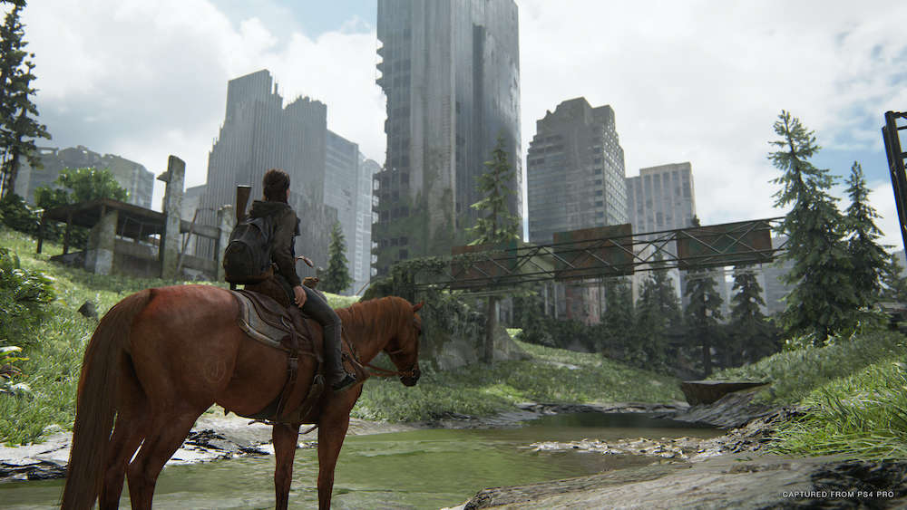
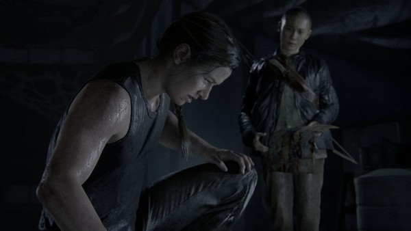
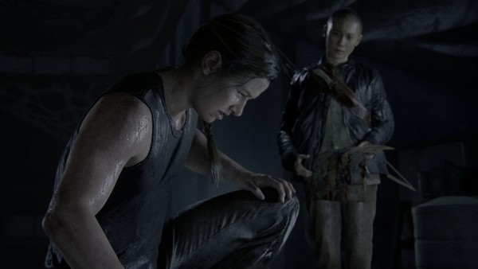
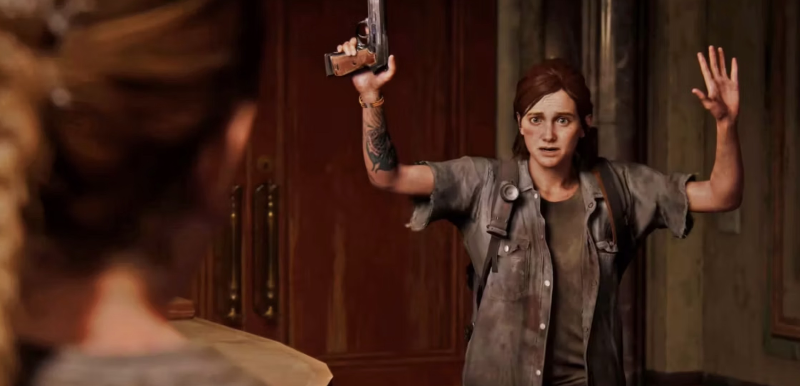
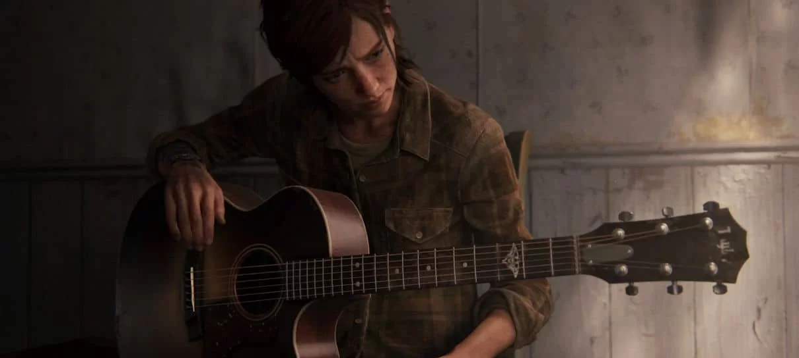
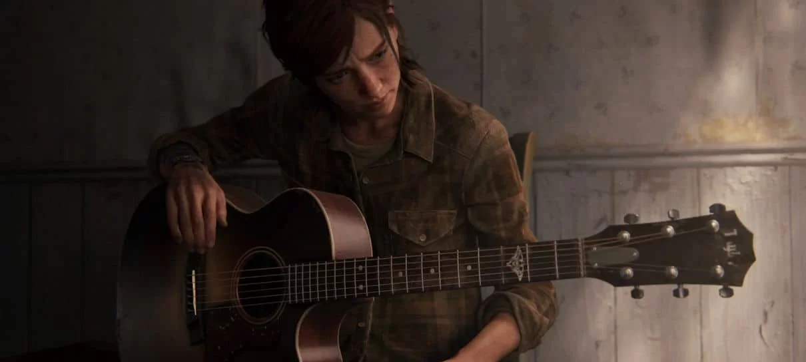

"The Last of Us Part II" é um videogame de ação e aventura desenvolvido pela Naughty Dog e lançado em 2020 para o console PlayStation 4. O jogo é uma sequência direta de "The Last of Us", continuando a história pós-apocalíptica de Joel e Ellie em um mundo devastado por uma infecção fúngica que transforma humanos em criaturas hostis chamadas de infectados.
O jogo começa cerca de cinco anos após os eventos do primeiro jogo. Ellie, agora uma jovem adulta, vive na cidade de Jackson, Wyoming, em uma comunidade pacífica de sobreviventes. Ela está em um relacionamento romântico com outra moradora, Dina. A vida em Jackson é relativamente tranquila, com patrulhas regulares para proteger a cidade de ameaças externas.

No entanto, a paz é interrompida quando um evento traumático acontece: um grupo de fanáticos religiosos conhecidos como os "Serafitas" ataca a comunidade, resultando em mortes, incluindo a do líder da patrulha, Joel. Consumida pela raiva e desejo de vingança, Ellie embarca em uma jornada para Seattle com Dina e seu amigo Jesse para caçar e matar os responsáveis pela morte de Joel.

Em Seattle, Ellie e seus companheiros enfrentam vários desafios, incluindo grupos hostis de sobreviventes, bem como os Serafitas e um grupo militar chamado WLF (Wolves). Durante sua busca por vingança, Ellie descobre a verdade sobre os Serafitas e seus líderes, bem como sobre os eventos que levaram à morte de Joel.
Conforme a história avança, o jogador também assume o controle de Abby, uma soldada do WLF que tem suas próprias razões para buscar vingança. A narrativa intercala entre as perspectivas de Ellie e Abby, revelando a complexidade das motivações e a natureza ambígua do conflito entre as duas personagens.
 

À medida que o jogo progride, Ellie e Abby enfrentam desafios morais e emocionais, confrontando o custo da vingança e o peso do perdão. Suas jornadas convergem em um confronto final devastador que força Ellie a confrontar as consequências de suas escolhas e decidir o que realmente importa para ela.

O jogo termina com Ellie retornando a Jackson, onde ela confronta as repercussões de suas ações e busca reconciliar-se com seu passado e com as pessoas ao seu redor. Embora o futuro permaneça incerto, Ellie finalmente encontra uma medida de paz consigo mesma, marcando o fim de sua jornada através do mundo pós-apocalíptico de "The Last of Us Part II".
 
